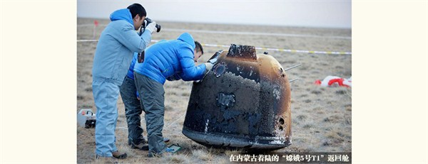

【太空】嫦娥5号T1顺利返回地球
2014-11-01 00:41:00
原文网址：https://blog.udn.com/MengyuanWang/108908664
中共在2003年决定在“空间站”（即台湾所称的“太空站”）计划之外，另外开启无人探月工程，又称嫦娥工程，预定在20年内完成，并可视情况转入载人登月工程。在细节上，整个探月计划分为三个阶段，即“绕”、“落”、“回”，共有七次发射任务。去年十二月运载玉兔号月球车降落月球表面的嫦娥三号，是第三次发射，也是“落”阶段的第一步。在2014年十月24日，“回”阶段正式开始，在第四次任务中发射了嫦娥5号T1（T代表探路，真正的嫦娥5号将在2017年升空）飞向月球，在绕月半周后，直接返回地球；这是因为嫦娥5号T1的任务是测试重返大气层的过程，所以不须要在月球逗留。当然重返大气层对太空任务来说是家常便饭，可是絶大多数的情况是从LEO（Low Earth Orbit，低绕地轨道）回来，飞行速度是所谓的第一宇宙速度（First Cosmic Velocity），约每秒7.8公里。而从月球回来的太空船则具有第二宇宙速度（Second Cosmic Velocity），即每秒10.9公里；因此有大约两倍的动能。如果直接使用一般的大气层剎车，则空气摩擦所產生的热量亦将为从LEO重返大气层的两倍，这就要求大幅增加隔热层的厚度和抗热能力，不但危険而且增加死重，在同様的任务酬载条件下，必须改用更大更昂贵的火箭，所以能避免就应该避免。
出发前的嫦娥5号T1返回舱，它是一个嫦娥5号返回舱的模型。
刚着陆的嫦娥5号T1返回舱。中共的太空飞行计划始自空气动力学大师銭学森，以致其飞行精度一向不在美苏之下。内蒙的降落场要比俄国用的中亜草原和美国用的太平洋降落区小多了。
对这个问题，最好的解决方案是分两次剎车，也就是第一次进入大气层时，角度瞄得浅些，在消耗了一部分动能之后，重新弹回太空，进入一个椭圆的低绕地轨道，在绕地球半周之后，再以平常的第一宇宙速度重返大气层。当然气动力学是完全非线性的现象学，大气层剎车之后马上要在自身动力非常有限的条件下，以特定速度和角度进入一个新的轨道，这说来容易，做来就难得多了。这是中共第一次尝试大气层剎车减速后重入轨道，所以特别用一次发射任务专门来检验这项技术。结果是圆满成功，嫦娥5号T1的返回载具于十一月1日早晨按计划在南大西洋上空首次进入大气层，四分锺之后重入太空，绕地球半周之后，顺利降落在内蒙，
1960年代的阿波罗计划原本也考虑过两次剎车的方案，后来因为没有把握达到所需的精度，选用了直接一次进入大气层的方法；当然NASA为此研发了3000吨级的土星五号火箭，而苏联在试图自制同级的N1火箭过程中，因连续数次爆炸，从登月竞赛中败下阵来。中共目前最大的火箭是400吨级的长征三型，预计在2017年用来发射嫦娥5号的长征五型也只有800吨，4000吨级的长征九型要到2030年才能服役。所以从这个观点来看，中共在火箭引擎技术上落后美国不只50年。不过阿波罗计划是美国的巅峰之作，从那里开始美国工业实力一路走下坡，到现在连复制土星五号火箭的引擎都已经无能为力，目前在研的SLS（Space Launch System）重型火箭只有1000吨重，最早要到2021年才能服役；而2014年十月28日在发射台自毁爆炸的Antares火箭用的居然是翻修后的旧苏联N1火箭用的引擎。最有创意的Spaceship Two也只是个不能完全飞出大气层的玩具，结果原型机在十月31日也坠毁了。读《罗马帝国衰亡史》（《The Decline and Fall of the Roman Empire》）的感觉和生活在今日的美国其实是很像的。四世纪的罗马军团头盔和铠甲还是一世纪罗马全盛时期的设计，但是制程大幅简化，做工粗糙，歷史学家一看就知道；未来的歷史学家大概对二十一世纪的美国也会有类似的评语。
2 条留言
主承包商包含波音，所以出大事故的機率不可忽略。
這裏我順便指出一個常見的認知誤區，亦即一般人往往以爲工程議題的不確定性必然小於政治，這是錯誤的。人類固然有著比普通物理系統更複雜的生理和心理作用，但也先天就建立在減熵原則之上，而且一旦組織出國家社會，更加必須遵循固定的規則，因而人爲地壓縮了隨機性。我在去年底對英國政局的分析預測就遠遠比當前美國登月計劃的成敗更為Precise；這除了後者有著較高的不可約不確定性（Irreducible Uncertainty）之外，也因爲其誤差是更難處理的Poisson Distribution，而人文政治方面的機率分佈往往是相對簡單的Bernoulli Distribution。
我十幾歲的時候，也曾經迷過《Foundation》裏的Psychohistory；現在年長，自己可能是當前全世界最接近那個理想的人，也就明顯看出了Asimov沒有理解到的問題，亦即人類歷史演進是一個混沌現象，所以1000年的未來發展，不是靠著中央極限定理N趨近無限大而能精確預測的。還好正如Keynes的名言：In the long run, we are all dead！能正確預判未來幾年的國際形勢，已經可以對國家和人類有重要貢獻了。